K8S 平台集成
1、Kubernetes 基本对象简介
Jenkins 架构
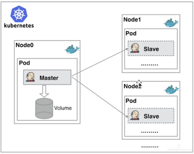
从图上可以看到 Jenkins Master 和 Jenkins Slave 以 Pod 形式运行在 Kubernetes 集群的 Node 上，Master 运行在其中一个节点，并且将其配置数据存储到一个 Volume 上去，Slave 运行在各个节点上，并且它不是一直处于运行状态，它会按照需求动态的创建并自动删除。
这种方式的工作流程大致为：当 Jenkins Master 接受到 Build 请求时，会根据配置的 Label 动态创建一个运行在 Pod 中的 Jenkins Slave 并注册到 Master 上，当运行完 Job 后，这个 Slave 会被注销并且这个 Pod 也会自动删除，恢复到最初状态。
那么我们使用这种方式带来了哪些好处呢？
- 服务高可用，当
Jenkins Master出现故障时，Kubernetes会自动创建一个新的Jenkins Master容器，并且将Volume分配给新创建的容器，保证数据不丢失，从而达到集群服务高可用。 - 动态伸缩，合理使用资源，每次运行
Job时，会自动创建一个Jenkins Slave，Job完成后，Slave自动注销并删除容器，资源自动释放，而且Kubernetes会根据每个资源的使用情况，动态分配Slave到空闲的节点上创建，降低出现因某节点资源利用率高，还排队等待在该节点的情况。 - 扩展性好，当
Kubernetes集群的资源严重不足而导致Job排队等待时，可以很容易的添加一个Kubernetes Node到集群中，从而实现扩展。
2、基于 Kubernetes 部署 Jenkins
$ kubectl create ns devops
jenkins.yaml
kind: Deployment
apiVersion: apps/v1
metadata:
labels:
k8s-app: jenkins
name: jenkins
namespace: devops
spec:
replicas: 1
revisionHistoryLimit: 10
selector:
matchLabels:
k8s-app: jenkins
template:
metadata:
labels:
k8s-app: jenkins
namespace: devops
name: jenkins
spec:
containers:
- name: jenkins
image: jenkins/jenkins:2.253
imagePullPolicy: IfNotPresent
ports:
- containerPort: 30080
name: web
protocol: TCP
- containerPort: 30081
name: agent
protocol: TCP
resources:
limits:
cpu: 1000m
memory: 2Gi
requests:
cpu: 500m
memory: 512Mi
livenessProbe:
httpGet:
path: /login
port: 30080
initialDelaySeconds: 60
timeoutSeconds: 5
failureThreshold: 12
readinessProbe:
httpGet:
path: /login
port: 30080
initialDelaySeconds: 60
timeoutSeconds: 5
failureThreshold: 12
volumeMounts:
- name: jenkins-home
mountPath: /var/lib/jenkins
env:
- name: JENKINS_HOME
value: /var/lib/jenkins
- name: JENKINS_OPTS
value: --httpPort=30080
- name: JENKINS_SLAVE_AGENT_PORT
value: "30081"
volumes:
- name: jenkins-home
# hostPath:
# path: /data/devops/jenkins
# type: Directory
emptyDir: {}
serviceAccountName: jenkins
---
apiVersion: v1
kind: ServiceAccount
metadata:
labels:
k8s-app: jenkins
name: jenkins
namespace: devops
---
kind: Service
apiVersion: v1
metadata:
labels:
k8s-app: jenkins
name: jenkins
namespace: devops
spec:
type: NodePort
ports:
- name: web
port: 30080
targetPort: 30080
nodePort: 30080
- name: slave
port: 30081
targetPort: 30081
nodePort: 30081
selector:
k8s-app: jenkins
---
kind: Role
apiVersion: rbac.authorization.k8s.io/v1beta1
metadata:
name: jenkins
namespace: devops
rules:
- apiGroups: [""]
resources: ["pods","configmaps","namespaces"]
verbs: ["create","delete","get","list","patch","update","watch"]
- apiGroups: [""]
resources: ["pods/exec"]
verbs: ["create","delete","get","list","patch","update","watch"]
- apiGroups: [""]
resources: ["pods/log"]
verbs: ["get","list","watch"]
- apiGroups: [""]
resources: ["secrets"]
verbs: ["get"]
---
apiVersion: rbac.authorization.k8s.io/v1beta1
kind: RoleBinding
metadata:
name: jenkins
namespace: devops
roleRef:
apiGroup: rbac.authorization.k8s.io
kind: Role
name: jenkins
subjects:
- kind: ServiceAccount
name: jenkins
namespace: devops
kubectl apply -f jenkins.yaml
```
```
kubectl logs jenkins-b99f4986b-rjl8m -n devops
...
Jenkins initial setup is required. An admin user has been created and a password generated.
Please use the following password to proceed to installation:
d0ef791eaa204d1a9700341f43a1e898
This may also be found at: /var/lib/jenkins/secrets/initialAdminPassword
*************************************************************
*************************************************************
*************************************************************
2020-08-22 09:55:05.902+0000 [id=26] INFO jenkins.InitReactorRunner$1#onAttained: Completed initialization
2020-08-22 09:55:05.915+0000 [id=19] INFO hudson.WebAppMain$3#run: Jenkins is fully up and running
2020-08-22 09:55:06.285+0000 [id=39] INFO h.m.DownloadService$Downloadable#load: Obtained the updated data file for hudson.tasks.Maven.MavenInstaller
2020-08-22 09:55:06.286+0000 [id=39] INFO hudson.util.Retrier#start: Performed the action check updates server successfully at the attempt #1
2020-08-22 09:55:06.289+0000 [id=39] INFO hudson.model.AsyncPeriodicWork#lambda$doRun$0: Finished Download metadata. 28,549 ms
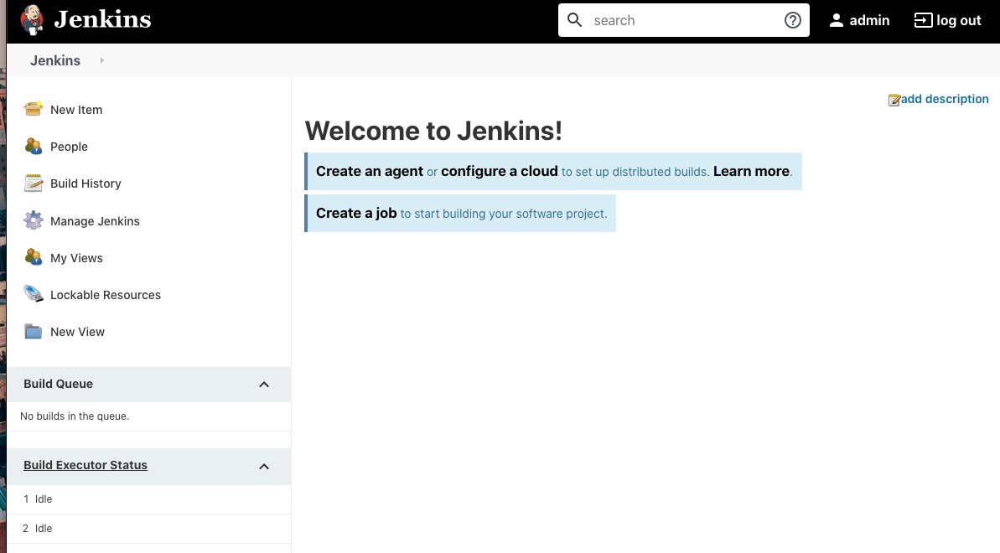
3、部署 Jenkins 静态 Slave 节点
3-1 填写Jenkins agent 信息，获取 secret
k8s-agent
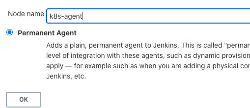
k8s-agent192.168.33.1- 5
/home/jenkins/workspace
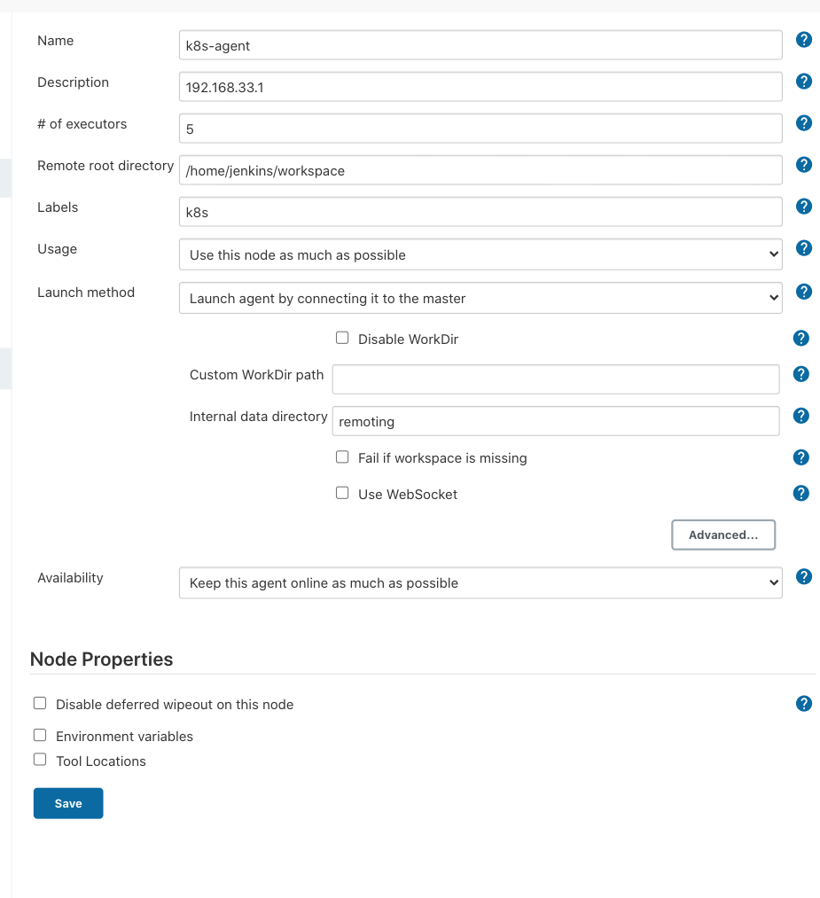
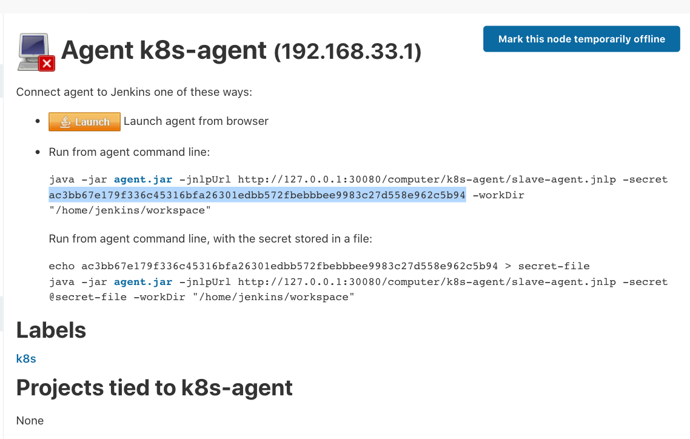
3-2 创建k8s-agent
jenkinsslave.yaml
---
kind: Deployment
apiVersion: apps/v1
metadata:
labels:
k8s-app: jenkinsagent
name: jenkinsagent
namespace: devops
spec:
replicas: 1
revisionHistoryLimit: 10
selector:
matchLabels:
k8s-app: jenkinsagent
template:
metadata:
labels:
k8s-app: jenkinsagent
namespace: devops
name: jenkinsagent
spec:
containers:
- name: jenkinsagent
image: jenkins/inbound-agent:latest
securityContext:
privileged: true
imagePullPolicy: IfNotPresent
resources:
limits:
cpu: 1000m
memory: 2Gi
requests:
cpu: 500m
memory: 512Mi
volumeMounts:
- name: jenkinsagent-workdir
mountPath: /home/jenkins/workspace
- name: buildtools
mountPath: /home/jenkins/buildtools
- name: dockersock
mountPath: "/var/run/docker.sock"
- name: dockercmd
mountPath: /usr/bin/docker
- name: kubectlconfig
mountPath: /home/jenkins/.kube/config
- name: kubectlcmd
mountPath: /usr/bin/kubectl
env:
- name: JENKINS_URL
value: http://192.168.33.1:30080
- name: JENKINS_SECRET
value: ac3bb67e179f336c45316bfa26301edbb572fbebbbee9983c27d558e962c5b94
- name: JENKINS_AGENT_NAME
value: k8s-agent
- name: JENKINS_AGENT_WORKDIR
value: /home/jenkins/workspace
volumes:
- name: jenkinsagent-workdir
hostPath:
path: /Users/i.../Jenkins/workspace
type: Directory
- name: buildtools
hostPath:
path: /Users/I.../Jenkins/buildtools
type: Directory
- name: kubectlconfig
hostPath:
path: /Users/I.../.kube/config
- name: kubectlcmd
hostPath:
path: /usr/local/bin/kubectl
- name: dockersock
hostPath:
path: /var/run/docker.sock
- name: dockercmd
hostPath:
path: /usr/local/bin/docker
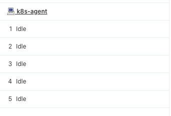
4、部署 Jenkins 动态 Slave 节点
安装 k8s plugin: https://plugins.jenkins.io/kubernetes/
4-1 配置 集群内部 动态 Slave 节点
- kubernetes
- https://kubernetes.default.svc.cluster.local
- Jenkins URL: http://192.168.33.1:30080/
- POD LABEL:
jenkins : agent - namespace: devops
- Pod retention: Never
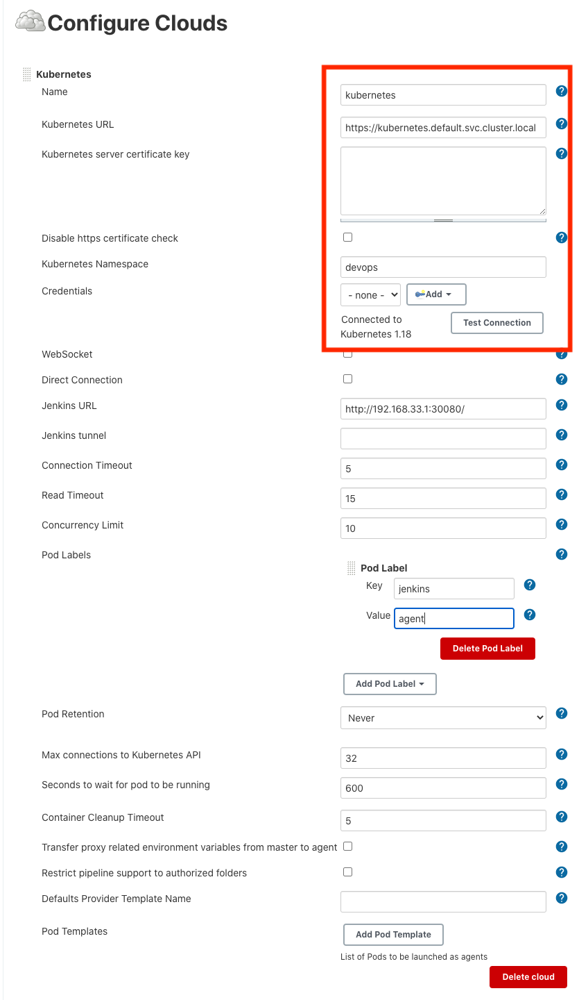
4-2 外部集群 动态 Slave 节点
- 进入集群服务器
.kube/config config文件中的certificate-authority-data内容，生成base64文件ca.crtconfig文件中的client-certificate-data内容，生成base64文件client.crt- config文件中的
client-key-data内容，生成base64文件c1ient.key
echo zzzzzzzzz | base64 -d > client.key
- 生成证书（会输入密码需要记住后面jenkins需要配置）
openssl pkcs12 -export -out cert.pfx -inkey client.key -in client.crt -certfile ca.crt
- 下载证书
cert.pfx
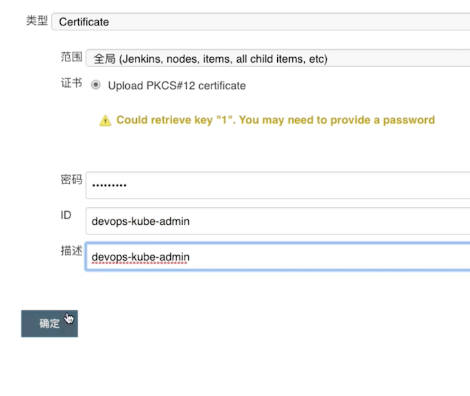
配置 动态 Slave 节点
cat ca.crt
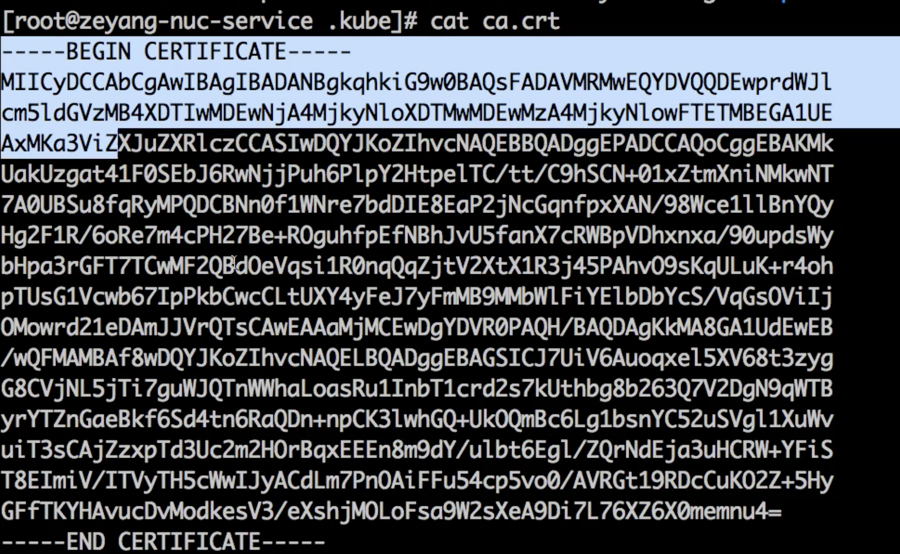
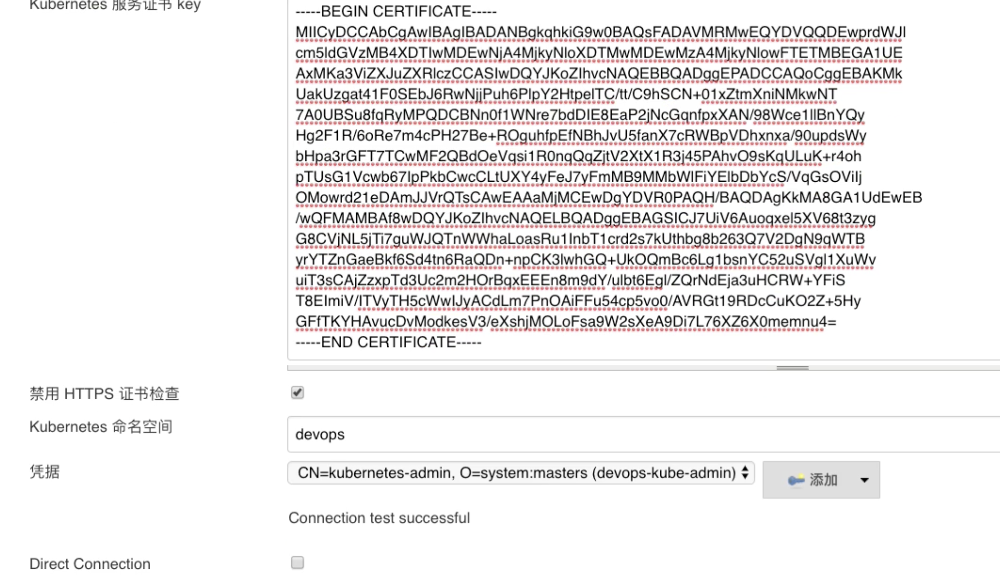
4-3 pipeline 启动 动态的 slave
pipeline{
agent{
kubernetes{
label "test01"
cloud 'kubernetes'
yaml '''
---
kind: Pod
apiVersion: v1
metadata:
labels:
k8s-app: jenkinsagent
name: jenkinsagent
namespace: devops
spec:
containers:
- name: jenkinsagent
image: jenkins/inbound-agent:latest
imagePullPolicy: IfNotPresent
resources:
limits:
cpu: 1000m
memory: 2Gi
requests:
cpu: 500m
memory: 512Mi
volumeMounts:
- name: jenkinsagent-workdir
mountPath: /home/jenkins/workspace
- name: buildtools
mountPath: /home/jenkins/buildtools
env:
- name: JENKINS_AGENT_WORKDIR
value: /home/jenkins/workspace
volumes:
- name: jenkinsagent-workdir
hostPath:
path: /Users/i../Jenkins/workspace
type: Directory
- name: buildtools
hostPath:
path: /Users/i.../Jenkins/buildtools
type: Directory
'''
}
}
stages{
stage("test"){
steps{
script{
sh "sleep 30"
}
}
}
}
}
Console Output
Created Pod: devops/test01-2gh1z-q4rtx
[Normal][devops/test01-2gh1z-q4rtx][Scheduled] Successfully assigned devops/test01-2gh1z-q4rtx to docker-desktop
[Normal][devops/test01-2gh1z-q4rtx][Pulling] Pulling image "jenkins/inbound-agent:4.3-4"
Still waiting to schedule task
‘test01-2gh1z-q4rtx’ is offline
Created Pod: devops/test01-2gh1z-llllt
[Normal][devops/test01-2gh1z-llllt][Scheduled] Successfully assigned devops/test01-2gh1z-llllt to docker-desktop
[Normal][devops/test01-2gh1z-llllt][Pulling] Pulling image "jenkins/inbound-agent:4.3-4"
[Normal][devops/test01-2gh1z-llllt][Pulled] Successfully pulled image "jenkins/inbound-agent:4.3-4"
[Normal][devops/test01-2gh1z-llllt][Created] Created container jnlp
[Normal][devops/test01-2gh1z-llllt][Started] Started container jnlp
Agent test01-2gh1z-llllt is provisioned from template test01-2gh1z
---
apiVersion: "v1"
kind: "Pod"
metadata:
annotations:
buildUrl: "http://192.168.33.1:30080/job/k8s-test/1/"
runUrl: "job/k8s-test/1/"
labels:
k8s-app: "jenkinsagent"
jenkins: "agent"
jenkins/label: "test01"
name: "test01-2gh1z-llllt"
namespace: "devops"
spec:
containers:
- env:
- name: "JENKINS_SECRET"
value: "********"
- name: "JENKINS_AGENT_NAME"
value: "test01-2gh1z-llllt"
- name: "JENKINS_NAME"
value: "test01-2gh1z-llllt"
- name: "JENKINS_AGENT_WORKDIR"
value: "/home/jenkins/agent"
- name: "JENKINS_URL"
value: "http://192.168.33.1:30080/"
image: "jenkins/inbound-agent:4.3-4"
name: "jnlp"
resources:
requests:
cpu: "100m"
memory: "256Mi"
volumeMounts:
- mountPath: "/home/jenkins/agent"
name: "workspace-volume"
readOnly: false
nodeSelector:
kubernetes.io/os: "linux"
restartPolicy: "Never"
volumes:
- emptyDir:
medium: ""
name: "workspace-volume"
Running on test01-2gh1z-llllt in /home/jenkins/agent/workspace/k8s-test
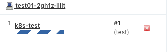